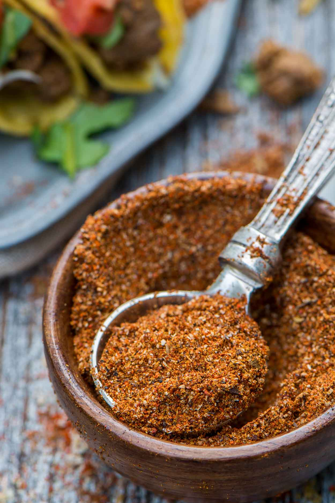

Taco Seasoning

Decription
Taco seasoning is a savory spice blend that's used to add warm, spicy, and smoky flavor to all kinds of dishes, from tacos to soups and casseroles.
- 1 tablespoon chili powder
- 1 1/2 teaspoons ground cumin
- 1 teaspoon sea salt
- 1 teaspoon ground black pepper
- 1/2 teaspoon ground paprika
- 1/4 teaspoon garlic powder
- 1/4 teaspoon onion powder
- 1/4 teaspoon crushed red pepper flakes
- 1/4 teaspoon dried oregano